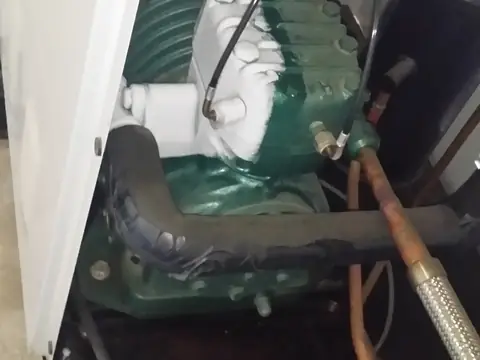
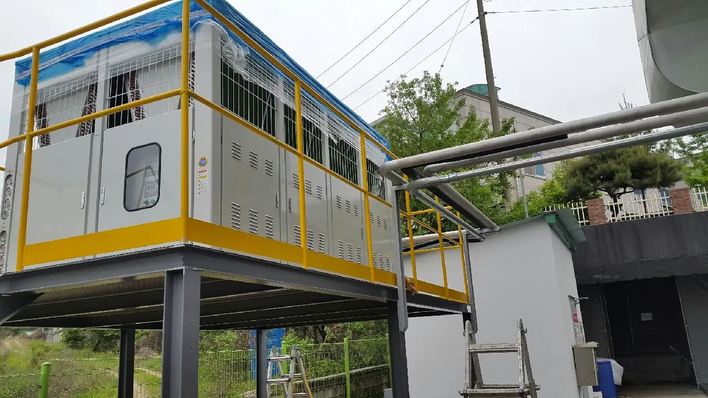
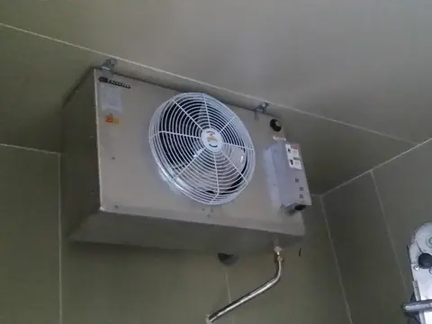
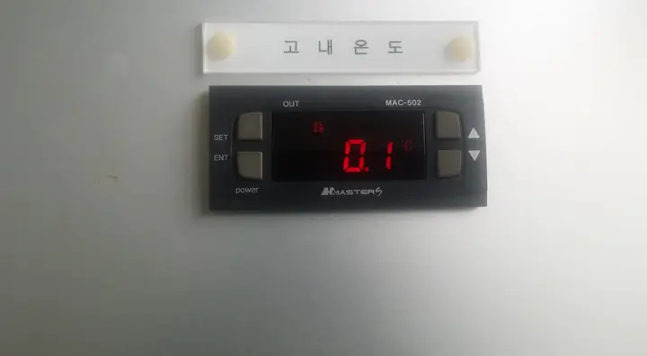
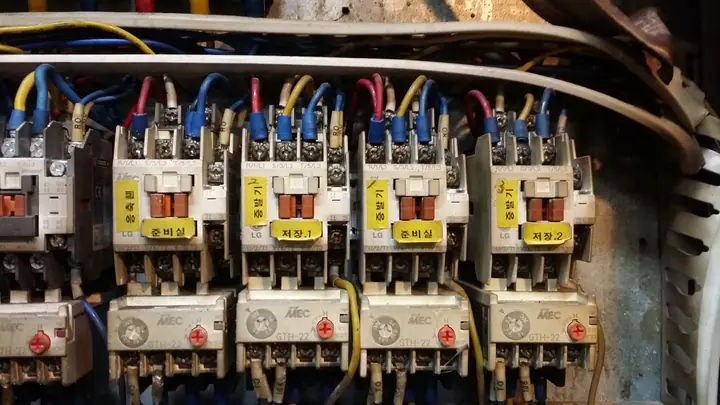

냉동기·압축기 수리
냉동기, 압축기의 고장 수리, 오버홀, 교체. 냉매 누설 점검과 냉매 충전까지 합니다.
강릉·동해·삼척 냉동기 수리 · 냉동냉장 AS
냉동기, 압축기, 저온창고, 냉동창고, 업소용 냉동고가 이상하면 증상부터 알려 주세요. 원인을 빠르게 찾고, 무엇을 고쳐야 하는지 먼저 설명드립니다.

전화나 문자로 증상과 장비 이름을 알려 주시면 빠르게 파악할 수 있습니다.
기다리는 동안 냉동고·냉장고 문은 되도록 열지 마세요. 차단기가 내려갔다면 반복해서 올리지 말고 전화 주세요.
냉동기 수리와 냉동냉장 AS가 주력입니다.

냉동기, 압축기의 고장 수리, 오버홀, 교체. 냉매 누설 점검과 냉매 충전까지 합니다.

저온창고, 냉동창고, 급냉실의 온도 불량과 쿨러(냉각기), 실외기, 응축기를 점검하고 수리합니다.

업소용 냉동고, 냉장고, 쇼케이스의 온도 불량과 냉매 계통을 점검하고 수리합니다.

냉동기 제어반, 차단기, 전자접촉기, 온도 조절기, 배선을 점검합니다.
업소용 에어컨과 냉난방기 수리·설치도 합니다.
작은 저온창고부터 산업용 냉동설비까지 다룹니다.
담당 기사가 냉동·공조 현장에서 직접 다뤄 온 장비와 작업입니다. 어떤 일을 맡길 수 있는지 사진 100장으로 확인해 보세요.
기초 프레임, 패널, 냉각기, 실외기까지 저온창고의 구조를 현장에서 다뤄 왔습니다.
규모가 큰 건물형 저온시설과 냉동설비 작업입니다.
차단기, 전자접촉기, 단자대를 구성하고 배선을 정리한 제어반입니다.
강릉, 동해, 삼척을 다닙니다. 그 밖의 지역은 위치를 알려 주시면 방문 가능 여부를 전화로 바로 말씀드립니다.
고장 원인과 부품에 따라 달라집니다. 현장에서 원인을 확인한 뒤 작업 전에 비용을 먼저 설명드립니다.
네. 일반과세 사업자이고 현금영수증 가맹점입니다. 세금계산서와 현금영수증 모두 발급해 드립니다.
장비 앞면이나 옆면의 명판 사진, 표시창의 온도나 경보 사진, 증상을 찍은 영상이 있으면 원인을 찾는 데 도움이 됩니다.